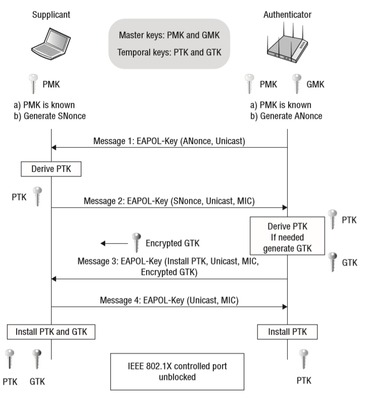

4 Way Handshake
The 4-way handshake is the process of exchanging 4 messages between an access point (authenticator) and the client device (supplicant) to generate some encryption keys which can be used to encrypt actual data sent over Wireless medium [1].

Message1: access point sends EAPOL message with Anonce (random number) to the device to generate PTK. Don’t forget client device knows Ap’s MAC because its connected to it. It has PMK, Snonce and its own MAC address. Once it receives Anonce from access point it has all the inputs to create the PTK.
PTK = PRF (PMK + Anonce + SNonce + Mac (AA)+ Mac (SA))
Message2: Once the device has created its PTK it sends out SNonce which is needed by the access point to generate PTK as well. The device sends EAPOL to AP message2 with MIC (message integrity check) to make sure when the access point can verify whether this message corrupted or modified. Once SNonce received by the AP it can generate PTK as well for unicast traffic encryption.
This is the second message going from the client device to AP with Snonce and MIC field set to 1.
Message3: EAPOL message3 is sent from AP to client device containing GTK. AP creates GTK without the involvement of the client from GMK.
Message4: Fourth and last EPOL message will be sent from the client to AP just to confirm that Keys have been installed.
4-way handshake Result:
Control port unlocked: Once the 4-way handshake is completed successfully virtual control port which blocks all the traffic will be open and now encrypted traffic can flow. Now all unicast traffic will be encrypted with PTK and all multicast traffic will be encrypted via GTK which created in the 4-way handshake process.
References
[1] https://www.wifi-professionals.com/2019/01/4-way-handshake